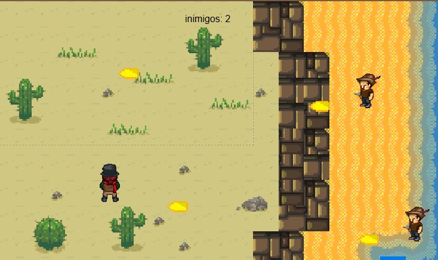
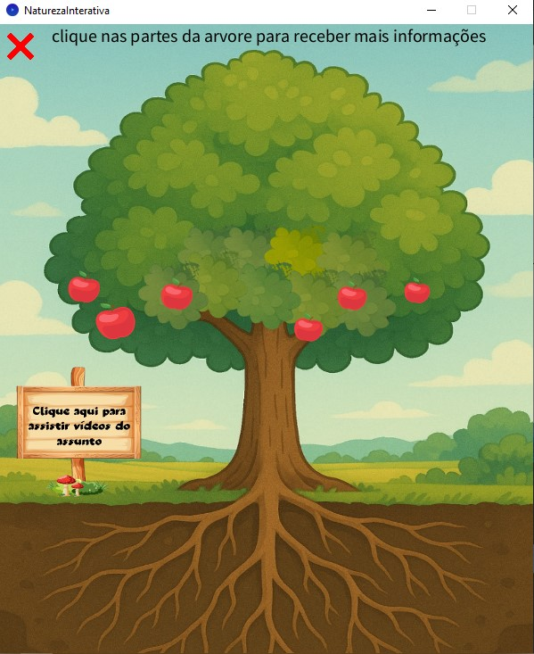
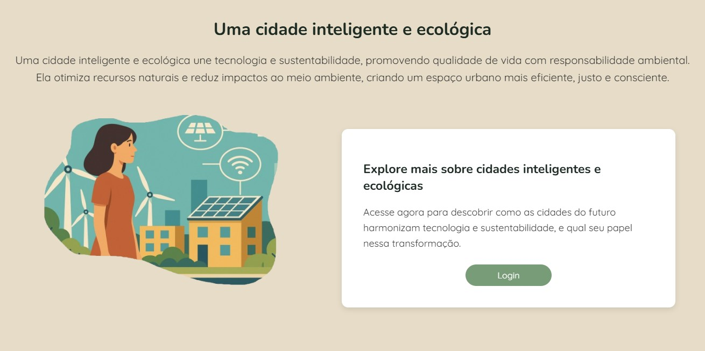

Nesta disciplina, trabalhei em atividades que estimulam a criatividade, a inovação tecnológica e o pensamento crítico aplicado a projetos reais.
Desenvolvido na plataforma Construct 3, este jogo imersivo narra a trajetória de Billy Hitchcock, um pistoleiro lendário do Velho Oeste. O jogador vivencia intensos duelos no faroeste contra inimigos historicos de Billy.
Desenvolvido em Java, este aplicativo educativo propõe uma experiência interativa para compreender os elementos que compõem uma árvore, sua função ecológica e a importância para o equilíbrio ambiental. O projeto junta programação, multimídia e conscientização ambiental.
Ainda mantendo a temática ambiental, esta aplicação web apresenta conceitos essenciais sobre Cidades Inteligentes. O projeto destaca como a tecnologia pode ser aliada na criação de espaços urbanos mais sustentáveis, conectados e eficientes, falando sobre o uso de recursos e infraestrutura digital.
